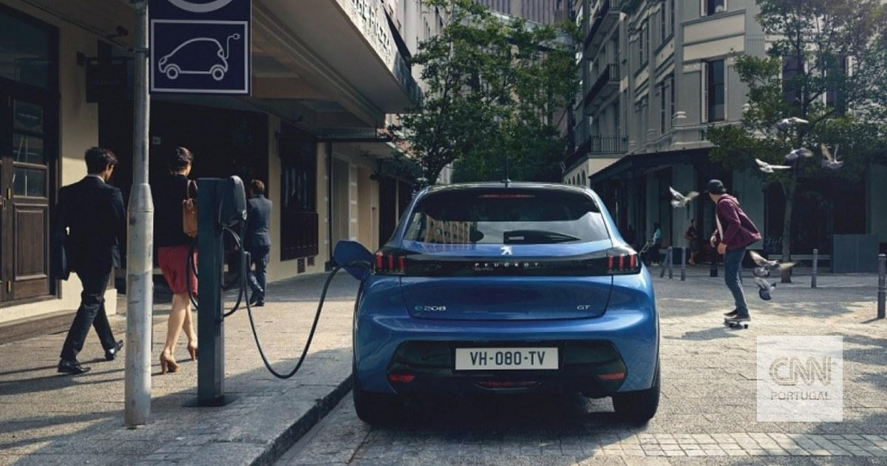

Existem diferentes tipos de veículos elétricos, embora todos eles funcionem com eletricidade, são eles:
Veículos elétricos puros (elétrico plug-in): São veículos totalmente elétricos que obtêm sua energia por meio de recarga em uma fonte externa, como uma estação de carregamento ou uma tomada elétrica;
Veículos híbridos plug-in (híbrido plug-in): São veículos híbridos que funcionam tanto com eletricidade quanto com combustível. Quando a carga da bateria elétrica acaba, é possível alternar para o uso de combustível, como gasolina ou diesel;
Veículos híbridos convencionais (híbrido): São veículos que são principalmente alimentados por combustíveis, mas também têm a capacidade de operar com energia elétrica. No entanto, ao contrário dos híbridos plug-in, eles não podem ser carregados em uma fonte externa, sendo recarregados principalmente por meio do sistema de recuperação de energia durante a frenagem ou desaceleração.

Vantagens de veículos elétricos:
Menos poluentes;
Eficiência energética;
Baixa manutenção;
Desempenho;
Menor tributação.
Desvantagens de veículos elétricos:
Pontos de recarga;
Recarga demorada;
Alto investimento;
Baixa autonomia;
Baterias com vida útil.